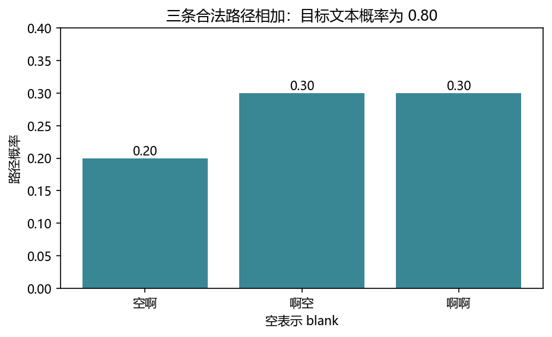
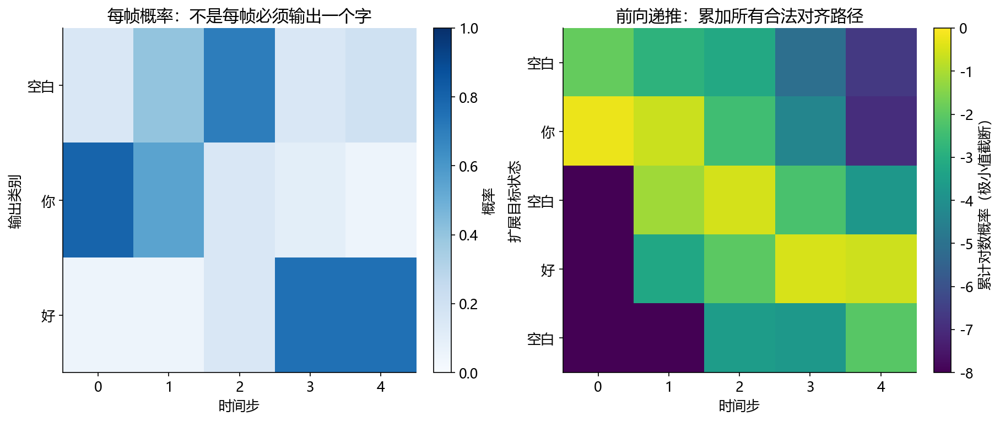

看图理解 · 跟着推演 · 对照真实结果
第13课 · 把声音对齐成文字：CTC 与识别评测
先建立直觉，再逐节讲原理、代码与结果；章节目录可定位学习。用两步概率手算 CTC，再弄清错字率和流式识别到底测什么。
从直觉、原理，到代码与结果
本版保留导览小实验，增加教材逐节精讲、代码分段阅读和结果解释。三个项目另有本次真实模型短推理，第 12 课增加实际训练曲线。按右侧小节分次学习即可，不必一次看完。
完整文字、规范公式和注释代码仍在上方“读完整图文”。视频中的历史报告、教学算例与本次实测分别标明，短演示不冒充完整重训或设备验收。
先修：先理解数组形状、概率以及 Mel 特征；不需要训练过识别模型。
- 按正确顺序折叠 CTC 路径
- 手算文本概率和负对数损失
- 区分识别准确性、对齐与流式延迟
本课覆盖清单与证据范围
- 1. “声音变文字”中最难解释的一步：谁对应谁
- 2. 先懂 blank，再懂重复字
- 3. 两个时间步，完整手算一个 CTC 损失
- 4. 时间步一多，为什么需要动态规划
- 5. 怎样接到 PyTorch，哪些形状最容易弄错
- 6. 识别“错几个字”，要用编辑距离而不是逐位置比较
- 7. CTC、注意力与 RNN-T，先理解解决问题的方式
- 8. 把基础转成可投实习的领域项目
结果从哪里来
- 导览中的小算例实际执行
- 原教材逐节讲解；正文代码/公式/图保留
两步 NumPy 例子只验证 CTC 路径概率；未训练或推理真实 ASR。完整动态规划、RNN-T 训练和真实流式系统需要后续实验。
新版视频时间轴已改变，单独记录续播位置；学习计划的完成勾选保持不变。
跟着运行：注释代码、实际输出与结果图
下面代码在生成本站时实际执行。这里只是教学小实验，不是完整模型训练或业务设备测评。
import numpy as np
# 行是时间步；列依次为 blank、啊
p = np.array([[0.4, 0.6], [0.5, 0.5]])
paths = np.array([[0, 0], [0, 1], [1, 0], [1, 1]])
# 每条路径的两步概率相乘
prob = p[0, paths[:, 0]] * p[1, paths[:, 1]]
valid = np.array([False, True, True, True])
mass = prob * valid # 非法路径对目标文本贡献为零
total = mass.sum()
loss = -np.log(total)
idx = np.arange(1, 5)
print("路径概率", prob.round(3).tolist())
print("目标概率", round(total, 3), "损失", round(loss, 5))
assert np.isclose(total, 0.8)
本次实际输出
路径概率 [0.2, 0.2, 0.3, 0.3] 目标概率 0.8 损失 0.22314

精讲中的代码、运行步骤与大图
代码片段用于逐行理解；真实运行结果仅限明确标注“本次实际”的部分。教材历史图保留原有实验范围。
代码精读 03 · 第1–18行
源码精读 / 教学片段，需配套环境与上下文，不等同于独立脚本。
from itertools import product
from math import log, prod
def collapse(path):
result = []
previous = None
for token in path:
if token != previous and token != 0:
result.append(token)
previous = token # 即使是 blank 也必须更新
return tuple(result)
probabilities = [[0.4, 0.6], [0.5, 0.5]] # [时间=2, 类别=2]
total = 0.0
valid_paths = [] # 保存每条合法路径，供下面绘图
for path in product(range(2), repeat=2):
probability = prod(probabilities[t][token]
for t, token in enumerate(path))代码精读 03 · 第19–36行
源码精读 / 教学片段，需配套环境与上下文，不等同于独立脚本。
if collapse(path) == (1,):
total += probability
name = "".join("空" if token == 0 else "啊" for token in path)
valid_paths.append((name, probability))
print(total, -log(total)) # 0.8，约 0.22314
assert abs(total - 0.8) < 1e-12
# 绘制刚才枚举得到的三条合法路径，不凭空填写概率。
from pathlib import Path
import matplotlib
matplotlib.use("Agg")
import matplotlib.pyplot as plt
plt.rcParams.update({"font.family": "Microsoft YaHei", "axes.unicode_minus": False})
fig, ax = plt.subplots(figsize=(7, 3.8))
bars = ax.bar([p[0] for p in valid_paths], [p[1] for p in valid_paths], color="#398795")
ax.bar_label(bars, labels=[f"{p[1]:.2f}" for p in valid_paths])
ax.set(ylabel="路径概率", xlabel="空表示 blank", ylim=(0, 0.4),
title=f"三条合法路径相加：目标文本概率为 {total:.2f}")代码精读 03 · 第37–39行
源码精读 / 教学片段，需配套环境与上下文，不等同于独立脚本。
Path("tutorial/figures").mkdir(parents=True, exist_ok=True)
fig.savefig("tutorial/figures/ch13_ctc_paths.png", dpi=150, bbox_inches="tight")
plt.close(fig)结果读图 03 · 3. 两个时间步，完整手算一个 CTC
原教材运行记录

原教材已存图 不是本次新测 先确认实验范围 再解释坐标与单位
结果读图 04 · 4. 时间步一多，为什么需要动态规划
原教材运行记录

原教材已存图 不是本次新测 先确认实验范围 再解释坐标与单位
代码精读 06 · 第1–15行
源码精读 / 教学片段，需配套环境与上下文，不等同于独立脚本。
def edit_distance(reference, hypothesis):
row = list(range(len(hypothesis) + 1))
for i, ref_char in enumerate(reference, start=1):
new = [i]
for j, hyp_char in enumerate(hypothesis, start=1):
deletion = row[j] + 1
insertion = new[j-1] + 1
substitution = row[j-1] + (ref_char != hyp_char)
new.append(min(deletion, insertion, substitution))
row = new
return row[-1]
ref, hyp = "打开空调", "打空调啊"
errors = edit_distance(ref, hyp)
print(errors, errors / len(ref)) # 2，0.5闭卷自测：两条录音分别参考 100 字错 12 字、参考 10 字错 5 字，总 CER 是多少？
先累计：错误 17，参考 110，CER=17/110≈15.45%；不能简单平均两条百分比。
逐字讲稿 · 可定位回看
说一个字需要一段时间，模型每个时间步都可能给出标签。因此它可能连续几个时间步都说“你”，而最终文字里只应写一个“你”。这里的空白是一种特殊标签，不是普通空格字符。
路径是 [你,你,空白,好,好]。先把连续的“你你”和“好好”各合成一个，再去掉空白，得到“你好”。 路径是 [哈,哈]，合并后只能得到一个“哈”。想得到“哈哈”，一条合法路径可以是 [哈,空白,哈]。
顺序很重要：若先删掉第二个例子的空白，再把相邻“哈哈”合并，就会错误地丢掉一个字。 不能先删空白再合并，也不能把相邻特征帧当成一个字。真实模型还可能做时间下采样，输入帧数和输出步数未必相同。
想象你说打开空调四个字，有人把开拖得很长，有人中间停一下。每十毫秒取一次特征，一秒约一百帧，却只有四个字，所以不能机械地每二十五帧分配一个字。
先看流程的四个盒子。波形是密密麻麻的样点，特征是按窗提取的局部信息，编码器还可能把时间步压缩。最后的文字长度，通常比前面的时间位置少得多。
我们这一课把问题缩到两个输出时间步，词表只有空白和啊。缩小后可以把全部路径列完，看到识别训练究竟在提高哪个概率，再回到真实长录音。
第一条示意路径是啊、啊、空、啊。先把挨着的两个啊合并，得到啊、空、啊；然后删空，得到两个啊。中间的空白把两个相同字隔开了。
如果先删空，原路径会变成三个连续的啊，再合并只剩一个啊。这就是为什么折叠顺序不能交换。遇到重复字，先画出空白位置，再手工检查一次。
这里的空白是对齐机制说这一输出步暂时不发新字，不是声音类别静音。输入明明有人讲话，模型仍然可以在某些输出步给空白较大概率。
第一步空白概率零点四，啊的概率零点六；第二步两者都是零点五。两步每步两种选择，一共四条路径，每条概率是两个对应数字相乘。
空空是零点四乘零点五，等于零点二，折叠成空文本。空啊也是零点二；啊空是零点三；啊啊是零点三，但相邻重复合并以后仍然是一个啊。
目标如果是一个啊，后三条都合法。不要因为啊啊看起来有两个字符就排除它，先按折叠规则判断文本，再决定这条路径有没有给目标贡献概率。
三个合法贡献是零点二、零点三、零点三，加起来是零点八。最高单条路径只有零点三，所以拿最高路径代替总概率，会把这道训练目标算错。
负自然对数把提高目标概率变成降低损失。零点八的负对数约零点二二三；概率接近一时损失接近零。这里没有百分号，损失也不是错字率。
真实序列路径数会爆炸，不能继续暴力列举。动态规划把到达相同目标位置的路径概率合并，对数域计算还避免很多小概率连乘导致数值下溢。
先看概率矩阵，它的两行表示两个输出时间步，两列表示空白和啊。路径矩阵四行，每一行存两个类别编号，零代表空白，一代表啊。
索引表达式按每条路径分别取第一步和第二步的概率，再逐元素相乘，得到四个数。valid 列表只把第一条标为假，因为它折叠后没有啊。
乘上布尔列表后，非法路径贡献变成零，其他概率保留。最后求和再取负对数。这里使用显式合法表是为了看懂两步算例，不是完整 CTC 损失实现。
横轴依次是空空、空啊、啊空、啊啊，纵轴都是概率。路径概率第一点在零点二，目标贡献第一点在零，因为空文本不是我们要训练的答案。
后三个位置两条线重合，说明这些路径概率全部属于目标啊。把目标贡献加起来得到零点八，打印损失约零点二二三一四，与刚才手算一致。
这张图检验的是概率和折叠规则，不是某个识别器的效果。没有输入真实语音，没有训练声学参数，也不能把这个损失和另一份数据的模型损失直接比较。
假设特征一百帧，编码器约四倍下采样，可能只输出二十五步。准确数值还要看卷积参数，传入损失的有效长度必须对应这二十五步，不能还写一百。
常见损失接口把张量排成时间、批次、类别，也就是 T、B、C。若网络给的是批次、时间、类别，需要明确换轴；类别概率应先转成对数概率。
目标是啊啊时，最短合法路径是啊、空、啊，至少三步。若只有两步，目标概率就是零。把无穷损失直接屏蔽，会隐藏长度错误，应该先查下采样和重复字。
把参考打开空调和预测打空调啊并排看。删除参考里的开，再在结尾插入啊，就能变成预测，最少两次编辑，而不是后面位置都错了。
参考一共四个字，所以字错误率是二除以四，等于百分之五十。替换、删除、插入都计入分子；插入特别多时，错误率甚至可以超过百分之百。
多条录音要先累加错误和参考字数，再相除。标点、数字写法、大小写如何规范，要在比较前固定，不能某个模型遇到十二和数字十二时临时放宽。
一个模型即使使用 CTC，只要编码器读完整句未来，仍不能直接说它低延迟流式。真正分块处理时，必须限制未来上下文并正确保存跨块状态。
第一段字幕出现得早，但后来每次都改字，体验也可能不好。请分别记录首字时间、稳定文字时间、句末结果以及最终错误率，不要用一个数字代表全部。
你的实习作品可以先固定预训练基线，做领域词错误分析和可靠评测。热词要有不该触发的负例，微调要有通用回归集，才能解释改善有没有代价。
先暂停：啊、空、啊、啊折叠成什么？答案是两个啊，因为末尾相邻重复先合并，中间空白再删除。请在纸上按这两步写，不靠眼睛猜。
第二题：目标两个相同字，两个输出步够不够？不够。必须有一个空白把它们隔开，至少三个有效输出步，这是长度检查的重要边界情况。
最后一题，一段一百字错十二，另一段十字错五，总体错误率是十七除以一百一十，约百分之十五点四五。学完请自己改概率、重算损失，并解释图哪一处会变。
CTC把时间步上的标签路径折叠成文本，训练汇总所有合法对齐。贪心解码只选每步最大标签再折叠，通常并不等于找到概率最大的整句文本。
Transducer把声学时间位置和已输出token位置一起考虑，预测网络利用已输出历史，Joiner合并声学与标签表示。同一声学位置可以继续输出标签，也可以通过blank推进时间。
因此不能把CTC的重复合并规则直接当作RNN-T的全部解码规则。Zipformer项目使用Transducer接口，而本课CTC算例用于学习对齐与损失；两者有关联，但不是同一模型。
一句一百字错十字，另一句十字错五字，语料总错误是十五，总参考长度一百一十，所以CER约百分之十三点六四。把两个句子错误率简单平均成百分之三十，会改变样本权重。
标点、空白、大小写、数字和繁简处理都应在比较前固定。比如“十二”与“12”是否算同一个内容，需要协议说明，不能看到系统输出后才修改规范化规则。
还要保留替换、删除、插入的数量和实际句子。总分接近的模型可能一个爱吞字、一个爱多写字，产品风险不一样。小集合一次全对也不能证明真实场景准确率百分之百。
一秒录音若每 10 ms 取一帧，大约有一百个时间位置；“打开空调”只有四个汉字。你不能规定每个字都占 25 帧：有人拖长“开”，有人在“空调”前停顿，同一字的发音内部也会变化。
识别系统通常先把波形变为特征，再由编码器提取与语音内容相关的信息，最后产生文字单元。文字单元可能是汉字、子词或其他符号，不必与“一个汉字”严格一一对应。编码器还能做时间下采样，因此要区分原始样点数、特征帧数和模型输出步数。
例如 100 帧特征经过近似 4 倍下采样，可能只剩约 25 个输出步；精确长度要按卷积核、步幅和填充公式计算。把原始 100 填进只输出 25 步的损失函数，是常见错误。 CTC 解决的是：只知道整句转写，不知道每一帧对应哪个字时，怎样训练序列模型。它不是音频特征，也不是某一种固定网络架构。
假设词表只有“啊”和一个特殊空白符 _。CTC 路径在每个时间步都选一个符号，然后遵守两步规则：先合并相邻重复，再删除空白。
顺序不能反过来。若先删空白，第一条路径会变成连续三个“啊”，再合并就错误地只剩一个。blank 表示这个输出步不发出新文字，不应简单理解为真实录音中的静音；有声音的帧也可能输出 blank。
这像把多个粗略时间标记折叠成一句话，但类比有边界：CTC 在训练时不先指定唯一的时间标记，而是把所有能得到正确文本的合法路径一起考虑。细节可参阅 CTC 原论文。
时间：第 1 步。blank 的概率：0.4。“啊”的概率：0.6。
时间：第 2 步。blank 的概率：0.5。“啊”的概率：0.5。
一共有四条路径。__ 概率 0.4乘0.5=0.2，折叠为空文本，不符合目标。_啊 概率 0.2，啊_ 概率 0.3，啊啊 概率 0.3，后三条都折叠为“啊”。因此目标文本概率为 0.2+0.3+0.3=0.8，损失为 -ln(0.8)约等于0.22314。
关键是“先对合法路径求和，再取负对数”，不是只挑概率最高的那条路径。本例单条路径最高只有 0.3，但整个目标文本概率是 0.8。
下面用 Python 标准库枚举检查，再用 Matplotlib 绘图。0 表示 blank，1 表示“啊”；这是概率计算演示，不含语音模型。从课程根目录 audio-course-zh 运行，图保存在 tutorial/figures/ch13_ctc_paths.png。
三根柱子都折叠为同一个“啊”。读图时先指出每根柱子对应哪条路径，再将高度相加；不能只拿最高柱子当作目标文本概率。
product(...,repeat=2) 枚举两步所有选择；enumerate 同时给出时间下标和该步符号。previous 不能只记录上一个非空白字符，否则“啊 blank 啊”会被错误折叠。
为什么损失要取负对数？目标概率越接近 1，负对数越接近 0；目标概率越接近 0，惩罚越大。多个独立样本的概率连乘也可以变成对数相加，更便于优化。它不是把概率变成百分数，而是把“提高正确答案概率”改写成“降低一个标量损失”。
推理时最简单的贪心解码是每步取最大概率符号再折叠。这样找到的是一条高概率路径，不保证是总概率最高的文本，因为另一个文本可能有很多条各自较小、加起来更大的路径。束搜索保留若干候选并累积相应分数，通常以更多计算换更充分的搜索；是否有效仍要在固定数据与时延条件下测试。
这里调整张量形状或增加长度为一的维度。样本值未因此获得新信息，要分清批次、通道和时间。
先看中文注释：即使是 blank 也必须更新。这几行仍属于3. 两个时间步，完整手算一个 CTC 损失的同一处理链，输入变量沿用前一段，不是一个独立程序。
先看中文注释：[时间=2, 类别=2]；保存每条合法路径，供下面绘图。这几行仍属于3. 两个时间步，完整手算一个 CTC 损失的同一处理链，输入变量沿用前一段，不是一个独立程序。
先看中文注释：0.8，约 0.22314。断言把预期写成可失败的检查。通过只说明这一条件成立，不自动代表声音质量或全部场景合格。 打印是观测点。把这里的真实值与理论预期比较，若不一致应保留输出排错，而不是手工改成期望数字。
先看中文注释：绘制刚才枚举得到的三条合法路径，不凭空填写概率。。绘图展示的是传入数组。核对横轴单位、图例与统一尺度后，才可以比较不同处理的变化。
先看中文注释：398795")。绘图展示的是传入数组。核对横轴单位、图例与统一尺度后，才可以比较不同处理的变化。
绘图展示的是传入数组。核对横轴单位、图例与统一尺度后，才可以比较不同处理的变化。
绘图展示的是传入数组。核对横轴单位、图例与统一尺度后，才可以比较不同处理的变化。
绘图展示的是传入数组。核对横轴单位、图例与统一尺度后，才可以比较不同处理的变化。
先看这张随教材保存的图。上方代码实际运行结果：三条合法路径概率 0.2、0.3、0.3，相加为 0.8。本次视频引用既有结果，不把它称为新运行。
横轴、纵轴、图例和单位决定图在回答什么问题。若曲线重合，先问它验证的是数值等价、形状还是算法质量。图像相似不自动证明真实业务效果相同。
把图中观察与本节假设联系起来，再回到前面的代码确认数组来源。合成信号实验、历史报告和真实模型输出属于不同证据范围，不能混成同一个成绩。
如果有 100 步、1000 类，直接枚举需要考虑 1000的幂100 条路径，不现实。动态规划的想法是：许多不同路径在同一时刻到达同一个目标位置后，后续计算相同，可以先把这些概率合起来。
以目标“你好”为例，扩展目标为 [blank,你,blank,好,blank]。定义 alpha下标t,s 为到第 t 步、走到扩展位置 s 的所有合法路径总概率。当前状态可以从自己停留、从前一位置前进，特定情况下还能跨过中间 blank。
“跨两格”只在当前字符不是 blank、且与前两格字符不相同时允许。如果目标是“你你”，必须经过中间 blank 才能区分两个“你”。第一步只有开头 blank 和第一个字可达；最后把最后一个字状态与末尾 blank 状态求和。
这张图由已经执行的 run_experiments.py 生成。左图画每一步输出什么符号的概率；右图画“所有走到某个目标位置的路径累计了多少概率”。两个图不是一回事。前几步右图后面的状态不可达，所以非常暗。课程五步例子的总概率为 0.6674596875，与全部 243 条路径穷举一致；
它和上面的两步短代码使用不同输入，不应期待数字相同，也不是该短代码直接生成的图。
长序列概率相乘可能小到计算机难以表示，所以 原核心代码 的 ctc_log_probability 在对数域累加。对数域的“相加概率”需要 logaddexp，不能直接相加对数，因为后者对应原概率相乘。
先看这张随教材保存的图。五步 CTC 的输出概率与前向递推。本次视频引用既有结果，不把它称为新运行。
横轴、纵轴、图例和单位决定图在回答什么问题。若曲线重合，先问它验证的是数值等价、形状还是算法质量。图像相似不自动证明真实业务效果相同。
把图中观察与本节假设联系起来，再回到前面的代码确认数组来源。合成信号实验、历史报告和真实模型输出属于不同证据范围，不能混成同一个成绩。
网络未归一化输出称为 logits。先沿类别维做 log_softmax，再传给 CTCLoss。典型输入是 [T,B,C]：输出时间步、批次、含 blank 的类别数；不是所有网络常用的 [B,T,C]。目标字符不应把 blank 写进去；有效输入长度必须是下采样后的长度。
已验证模块 中的 check_torch_ctc 使用 [5,1,3] 输入、两个目标字，与手写结果对齐。reduction='sum' 让单条负对数似然方便比较；其他归一化口径可能给出不同数字。API 细节以 PyTorch 官方 CTCLoss 文档 为准。
如果目标是“啊啊”，至少需要三步：啊 blank 啊。更一般地，目标有 U 个符号、其中有 R 对相邻重复符号，就至少需要 U+R 个有效输出步。这个长度约束针对模型下采样后的输出，不是原始音频帧数。时间不足会产生零目标概率和无穷大损失。 先查长度、重复字和下采样，不要把 zero_infinity=True 当万能修复键；它将无穷损失及相关梯度置零，会让坏样本不再贡献正常训练信号，并没有修复对齐条件。
参考文本是“打开空调”，预测为“打空调啊”。逐位置比较会把后面的字全判错，但实际只需删除“开”、末尾插入“啊”两个操作。最少编辑次数是 2，参考长 4，所以 CER 为 （2）除以（4）=50 。
row[j] 来自上一行，表示已处理更短参考文本的最佳成本；new[j-1] 来自当前行左边，表示刚插入一个预测字符。每格取三种操作的最低成本，才不会被整体错位误导。
真实评测应先固定全半角、标点、大小写、数字等规范。“十二”与“12”是否等价是评测选择，不能对某个模型临时放宽。CER 按规范化后的字符计数；WER 按词计数，中文如果使用 WER，还必须固定分词规则。不要把词错误率与字错误率直接比较。课程评分器 按编号对齐、拒绝漏样本、输出分组 CER。 纯静音没有参考字，单独报告插入字数，不伪造分母；还要保留模型超时和失败的记录。
这几行依次得到row、new、deletion。它们对应“6. 识别“错几个字”，要用编辑距离而不是逐位置比较”中的中间量。逐行代入本节小例子的数值，确认每次赋值改变的量；代码片段承接前一段变量，不应脱离上下文单独运行。
这几行依次得到insertion、substitution、row。它们对应“6. 识别“错几个字”，要用编辑距离而不是逐位置比较”中的中间量。逐行代入本节小例子的数值，确认每次赋值改变的量；代码片段承接前一段变量，不应脱离上下文单独运行。
先看中文注释：2，0.5。打印是观测点。把这里的真实值与理论预期比较，若不一致应保留输出排错，而不是手工改成期望数字。
CTC 通常把给定输入后的路径概率分解到输出时间步，再折叠路径。编码器仍能利用上下文，所以条件独立假设不意味着网络只能看孤立一帧。
注意力编码器—解码器在生成下一个文字时，会利用之前生成的文字与输入表示。RNN-T 则结合声学时间状态与历史输出状态，在推进音频和发出文字之间建模。它们不是“旧→新→一定更好”的排行榜；数据、模型、解码和目标时延都影响选择。
流式能力也不是模型名字保证的。编码器若每次都读取整句未来，即使损失是 CTC，也不能直接当作低延迟流式系统。需要有限右上下文、跨块缓存，并区分暂定文字、稳定文字、句末结果。最终 CER 不会告诉你字幕在过程中修改了多少次。
你可以选“海洋与信号处理术语转写”，但只能使用获授权且可公开或脱敏的资料。先固定预训练模型、推理参数和语料划分，标出“波束形成、混响、水听器”等术语错误。热词是给解码增加领域偏好，不是把测试答案塞进去；要同时检查不含热词的负例会不会被误识成热词。
微调或 LoRA 之前先完成基线、归一化和错误分析。LoRA 减少可训练参数，并不自动保证少量数据不会过拟合。保留通用回归集，检查领域提升是否以通用识别退化为代价。
练习一：啊 blank 啊啊 折叠成什么？答案：“啊啊”。练习二：参考 100 字、编辑错误 12；另一段参考 10 字、错误 5，总体 CER 是多少？答案：（17）除以（110）约等于15.45 ，不是简单平均 12% 与 50%。
练习三：流式最终 CER 不变但首字晚 500 ms，是不是没有退化？答案：识别质量可能相近，交互体验已经退化。
排错时先检查采样率和声道，再检查 VAD 是否截断首尾、下采样长度是否正确、文本规范是否一致，最后才讨论模型大小。
就业交付应包括逐句预测、分组 CER、领域词召回和误触发、首字/句末延迟、至少五类错误，以及一次可复现的单因素改进。只展示“成功调用模型转写一段音频”还不足以体现算法能力。
适用边界与参考正文
两步 NumPy 例子只验证 CTC 路径概率；未训练或推理真实 ASR。完整动态规划、RNN-T 训练和真实流式系统需要后续实验。
教学图与实验图由本站整理生成；项目代码、预训练模型和公开数据的来源见配套正文。旁白是本地中文语音合成，不是教师真人录音，也不是 NotebookLM 生成。没有向 Google 上传项目材料。